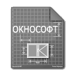

УНФ Заказ покупателя
Отсутствует подключение к интернету либо сервер недоступен
Запрашиваемый url не найден
Для продолжения работы с Вы можете перейти к страницам:
Главная страница
Окнософт:Заказ дилера - лёгкий клиент
Окнософт:Заказ дилера - страница настройки
Окнософт:Облака - аренда программ
Окнософт:WIKI - база знаний